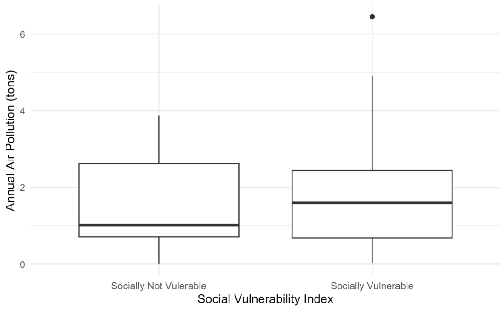
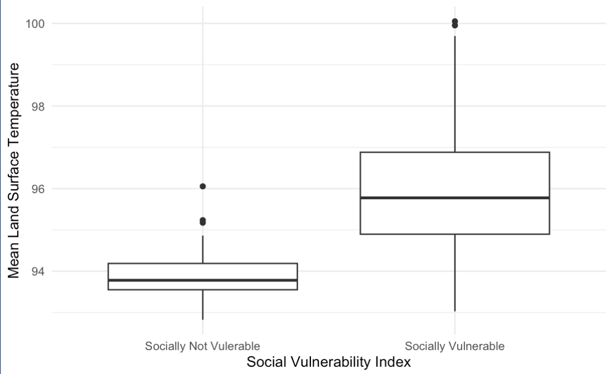

Examining The Roots of Environmental Injustice in Minneapolis
This interactive dashboard allows you to explore the legacy of residential segregation, one that has led to stark environmental injustice that tremendously ails Black, Latino, and Native American families in Minneapolis.
In this dashboard and following analysis, we chose to investigate the following variables in order to investigate our research questions:
- Racial Covenants: property warranty deeds in Minneapolis
- HOLC Grades: Home Owner Loan Corporation (HOLC) neighborhood grades: 1, 2, 3, or 4 per census tract
- Social Vulnerability Index: Demographic and socioeconomic factors (such as poverty, lack of access to transportation, and crowded housing) that adversely affect communities that encounter hazards and other community-level stressors.
- Mean Land Surface Temperature: Average 09/01/2022 Land Surface Temperature per census tract (in Fahrenheit)
- PM2.5 Emissions: Annual emissions from all air permitted facilities located per zip code (2016-2020)
- Tree Canopy: Percentage of pixels in a city or neighborhood that are categorized as “tree” (2020)
Finding
The correlation between climate change effects and marginalized neighborhoods are apparent: the more socially vulnerable a neighborhood is, the more exposed they are to the effects of climate change—and we can trace this back to residential seggregation practices from the early 20th century.
A Closer Look
Let’s take a closer look at how residential seggregation correlates with the disparity in air pollution, and temperature in different Minneapolis neighborhoods.
Social Vulnerability vs. Climate Change
From our findings, it was clear that socially vulnerable neighborhoods (high poverty levels and minority population) are more exposed to air pollution and higher temperatures.
Before controlling for variables, socially vulnerable census tracts have a higher median for both average PM2.5 emissions and land surface temperature (graph below).
 
More importantly, after matching and modelling, we observed that census tracts with higher social vulnerability are exposed to 0.96 tons of PM2.5 more than less vulnerable areas. In the same vein, our model revealed that census tracts with higher social vulnerability had a mean land surface temperature that were 2.22°F higher than less vulnerable areas.
Click here for the full statistical report!